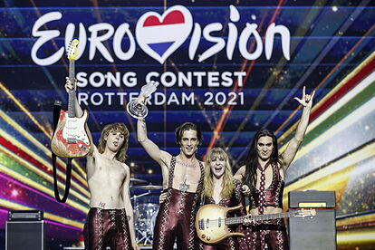
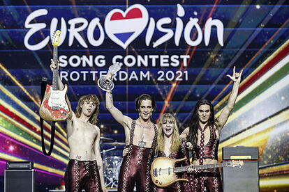

Måneskin es una banda italiana de rock. La bajista Victoria De Angelis y el guitarrista Thomas Raggi iban al colegio juntos y fundaron la banda en agosto de 2015. Ya había una cantante en la banda pero tras la llegada de Damiano David decidieron que sea el nuevo vocalista. Luego se incorporó el baterista Ethan Torchio a través de un anuncio que publicaron en Facebook. Alcanzaron la fama en 2017, gracias a la participaron en la undécima edición del concurso de talentos X Factor Italia, después de haber superado las fases iniciales del programa con gran éxito, se clasificaron segundos, apadrinados por Manuel Agnelli. Y firmaron un contrato con la compañía discográfica Sony Music. unque salieron segundos en el X Factor en 2021 ganaron el Festival de la Canción de San remo con el tema “Zitti e buoni”, siendo elegidos como representantes de Italia para el Festival de la Canción de Eurovisión 2021, celebrado en Róterdam, Países Bajos, el cual también ganaron con 524 puntos, 25 puntos más que la segunda posición, Francia. Se convirtieron así en los primeros de la Generación Z en ganar el certamen. El nombre del grupo, Måneskin, es una palabra danesa, idioma materno de Victoria que significa "Luz de luna".
 

Damiano David es el vocalista de la banda, nació en Roma el 8 de enero de 1999, es de Capricornio.
Victoria De Angelis es la bajista de la band, nació en Roma el 28 de abril del 2000, es de Tauro.

Ethan Torchio es el baterista de la banda, nació en Roma el 8 de octubre del 2000, es de Libra.
Thomas Raggi es el guitarrista de la banda, nació en Roma el 18 de enero del 2001, es de Capricornio.

Måneskin debuto con su EP “chosen”. Fue lanzado el 8 de diciembre de 2017 y alcanzó el puesto número 3 en la lista de álbumes italianos. El EP incluye el sencillo con el mismo nombre y otra canción original, ambos en idioma inglés, y varios covers interpretados durante la undécima temporada de X Factor. El álbum fue certificado platino y además las pistas obtuvieron dos certificaciones de platino y cuatro de oro por parte de FIMI. Fuera de Italia y el éxito posterior a Eurovisión, la versión de rock de la banda de " Beggin' " de The Four Seasons se convirtió en la canción más popular del disco.
Il Ballo della Vita es el primer álbum de estudio de Måneskin. Fue lanzado el 26 de octubre de 2018. El álbum alcanzó el número en la lista de álbumes italianos, logró llegar al Top 20 en las listas musicales europeas y recibió una certificación triple platino de FIMI. El álbum incluye los exitosos singles " Morirò da re ", " Torna a casa ", " Fear for Nobody", " L'altra dimensione " y " Le parole lontane”
Teatro d'ira: Vol. I es el segundo álbum de estudio de Måneskin. El álbum fue lanzado el 19 de marzo de 2021 y alcanzó el número uno en la lista de álbumes italianos, y fue certificado platino por FIMI. Después del éxito de Måneskin al ganar el título del Festival de la Canción de Eurovisión 2021 con " Zitti e buoni ", el álbum se hizo muy popular en Europa. Alcanzó el número uno en la lista de álbumes de Finlandia, Lituania y Suecia. En otros lugares, alcanzó la posición Top 5 en las listas semanales de Europa y encabezó la lista de álbumes de rock y metal del Reino Unido. Incluye singles " Vent'anni "Ganadora de Eurovisión" Zitti e buoni”, así como las exitosas canciones " I Wanna Be Your Slave" y " Coraline”.

El Merchandising de Måneskin salió el 31 de mayo y se agotó en tan solo 28 minutos. El 16 de julio volvió a estar en stock todos sus productos y tambien lanzar los nuevos modelos de su último videoclip "I wanna be your slave". Los podes encontrar en Måneskin Merchandising ahí vas a encontrr todos sus productos entre ellos buzos, remeras, pañuelos caracteristocos de sus integrantes, y más.